これは「ひとこと帖（Pocket Kobito）」という、訪日外国人向けに日本語フレーズを1ページ1フレーズで紹介する冊子・ページのデザイン検討画像です（2026-09-01制作）。
「なんでやねん」はその中の1フレーズ（Chapter 03 COMEDY）で、このページのデザインを決めようとしています。
01〜06はレイアウト5案（見本文は「お疲れ様です」ページを使用。日本語とローマ字のどちらを主役にするかの構図比較）＋比較一覧。
07〜11は日本語:ローマ字の大きさ比率4案（A=2:1／B=1.5:1／C=1:1同格／D=1:1.2。こちらは「なんでやねん」ページ実物）＋比較一覧。
12〜13は現時点の作り込み版「なんでやねん」ページ（PC幅とスマホ幅）。決めたいのは「どのレイアウト構図」と「どの日本語:ローマ字比率」でいくか、です。
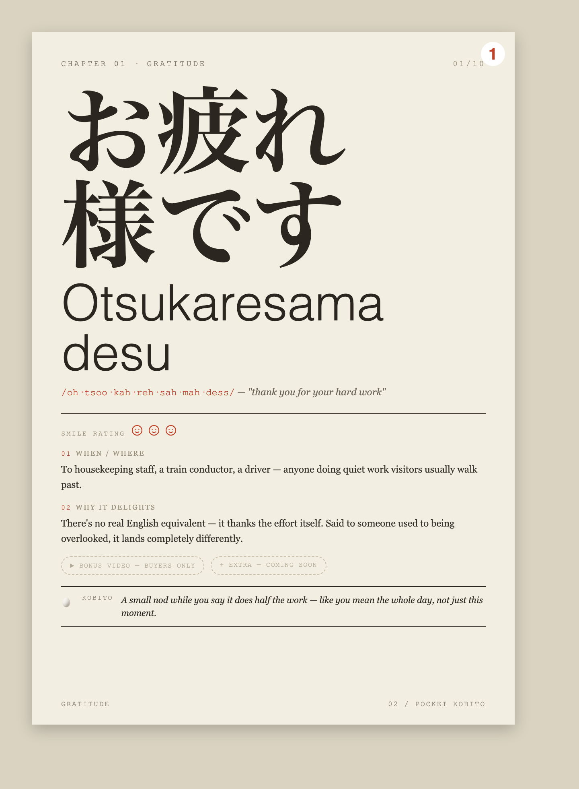
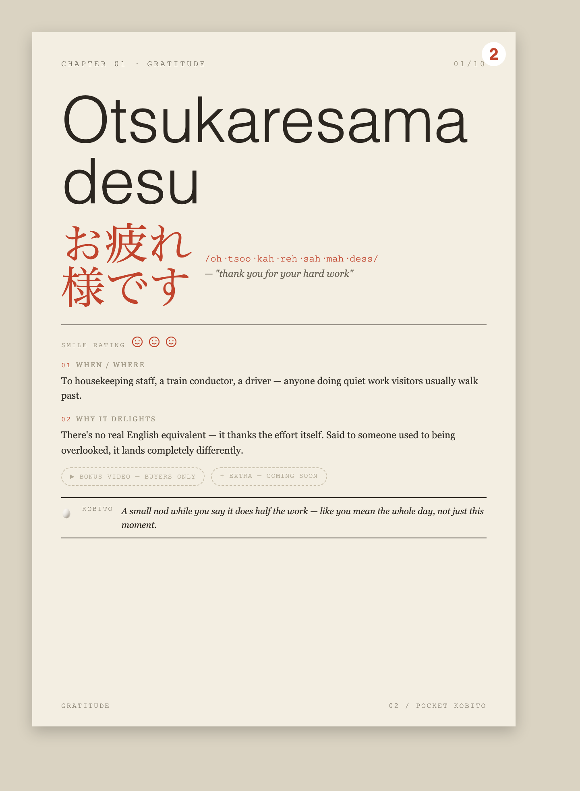
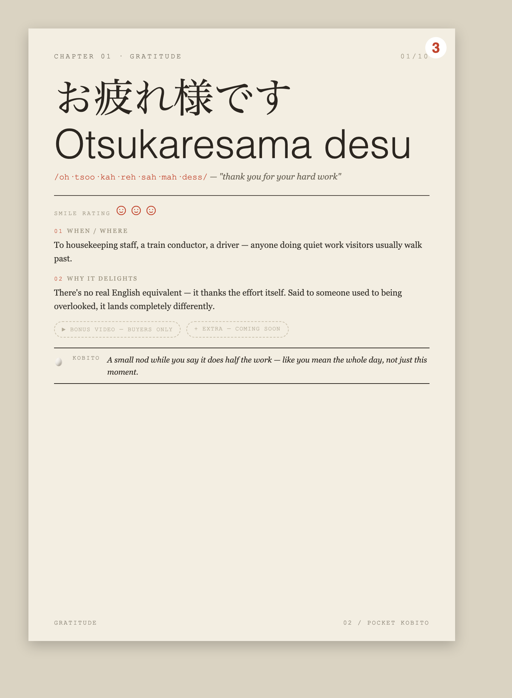
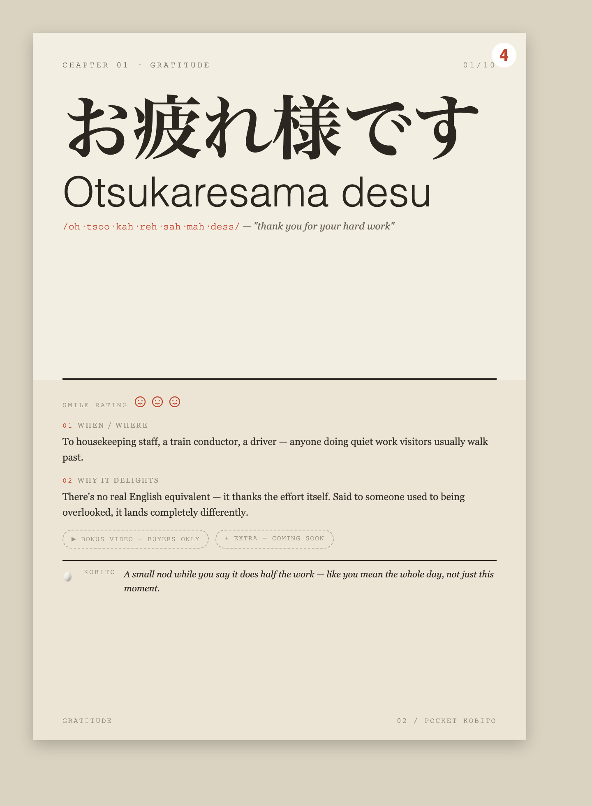
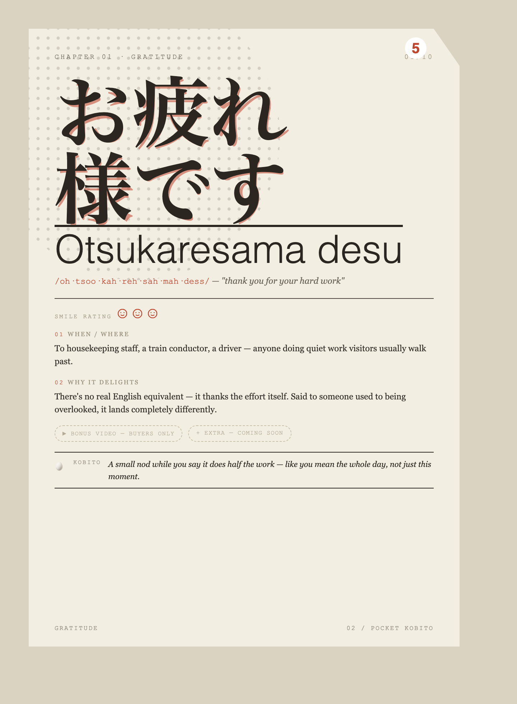
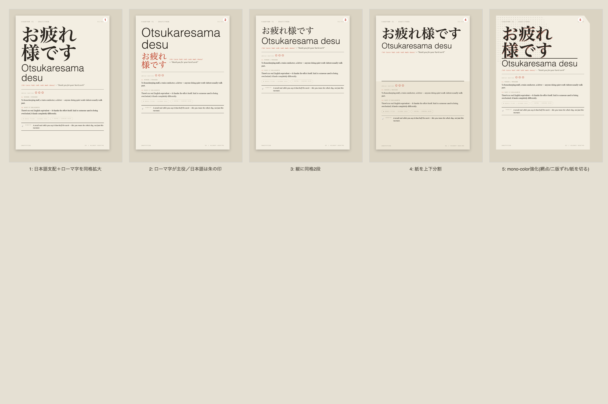
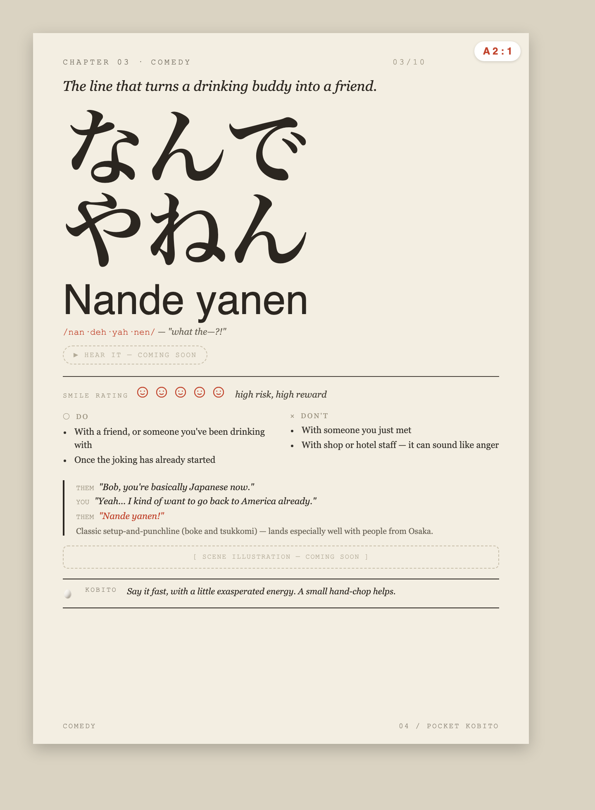
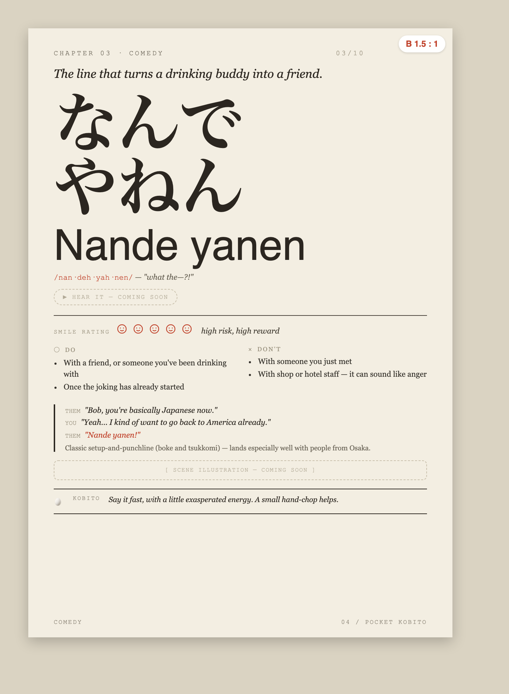
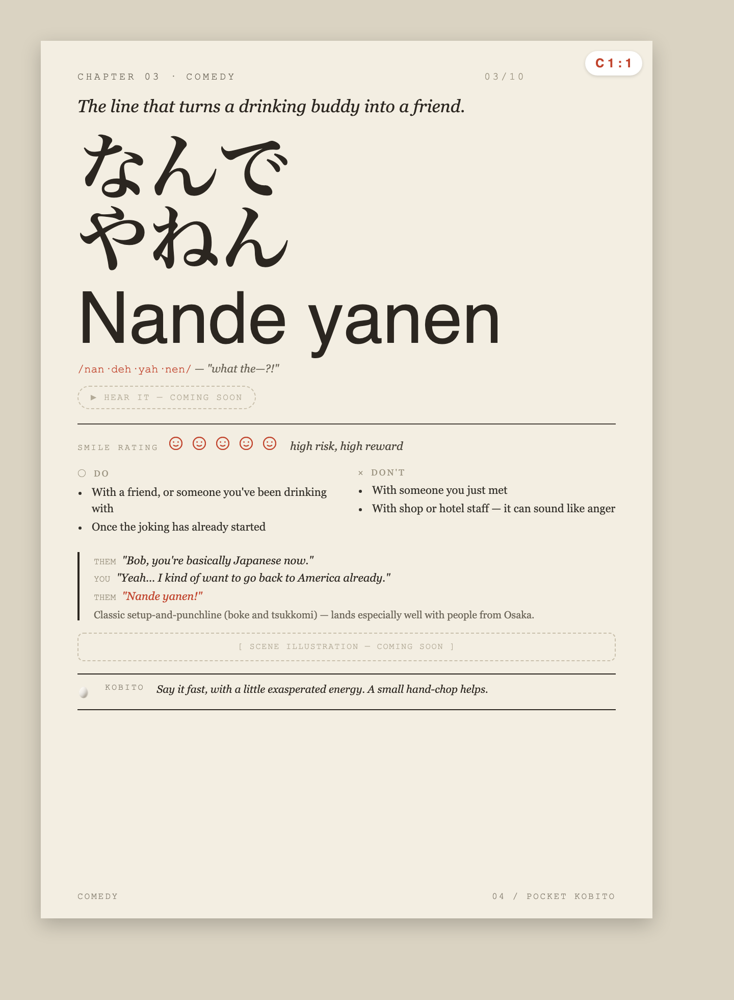
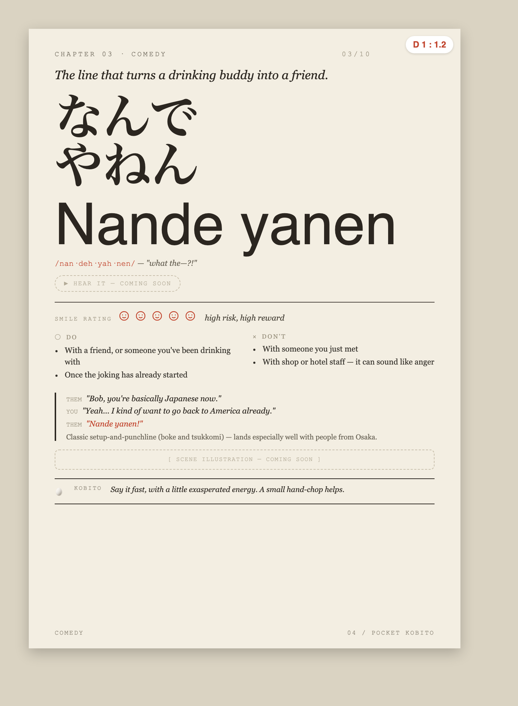
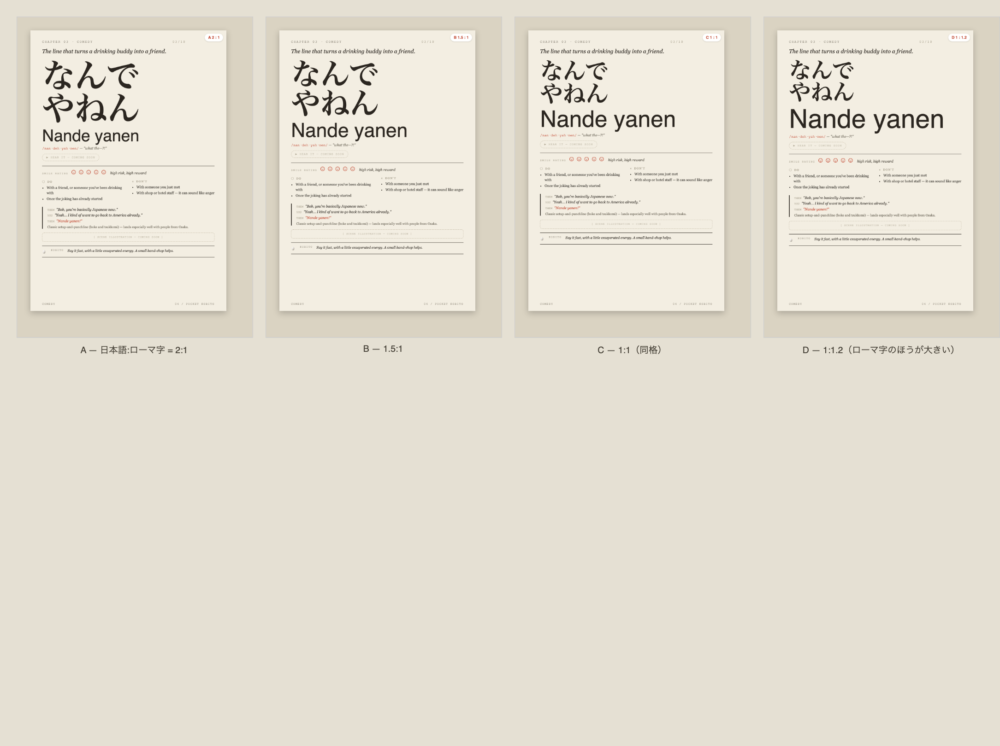
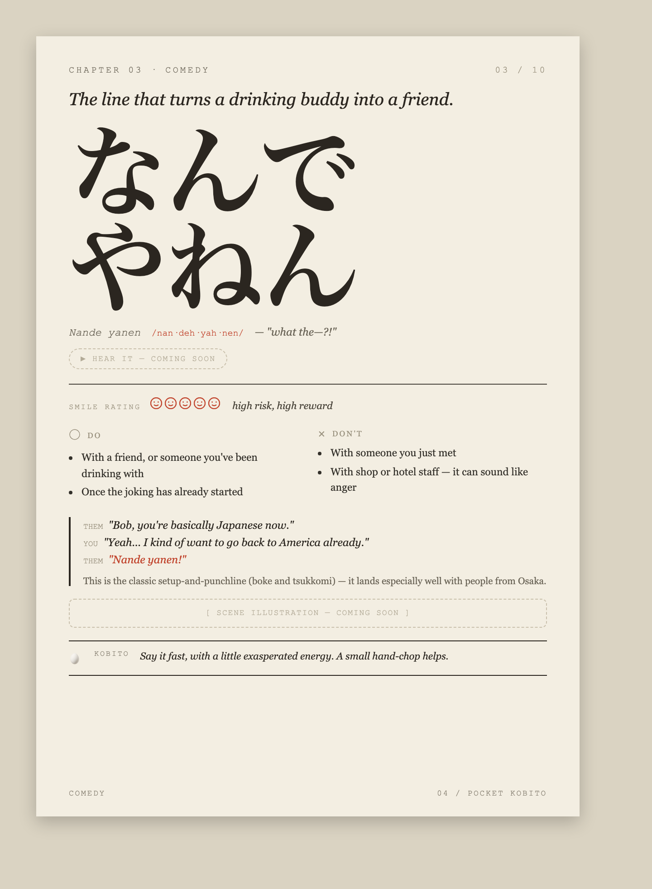
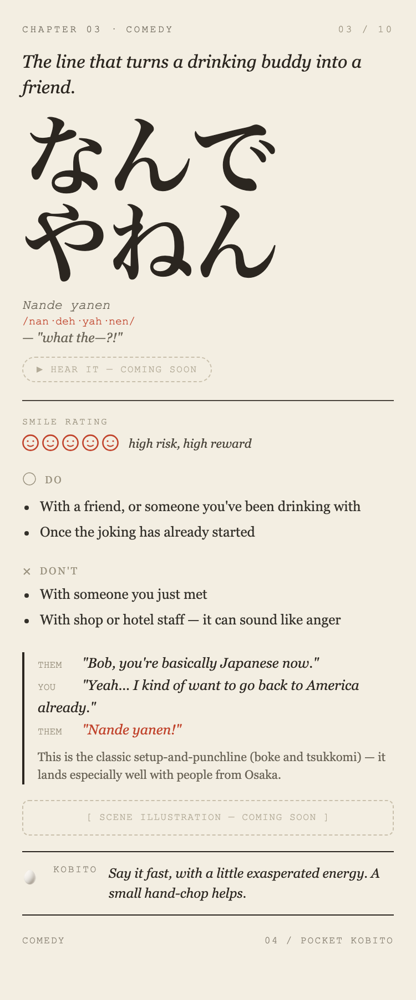